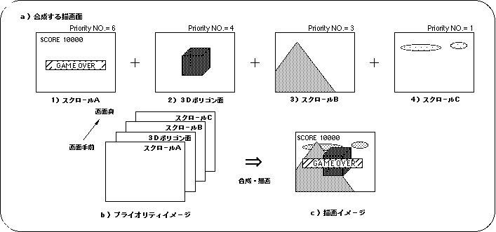
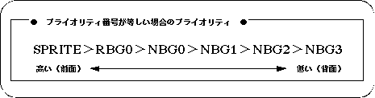
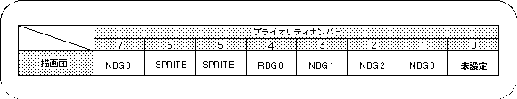
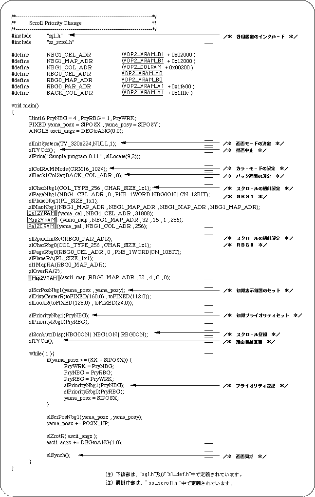
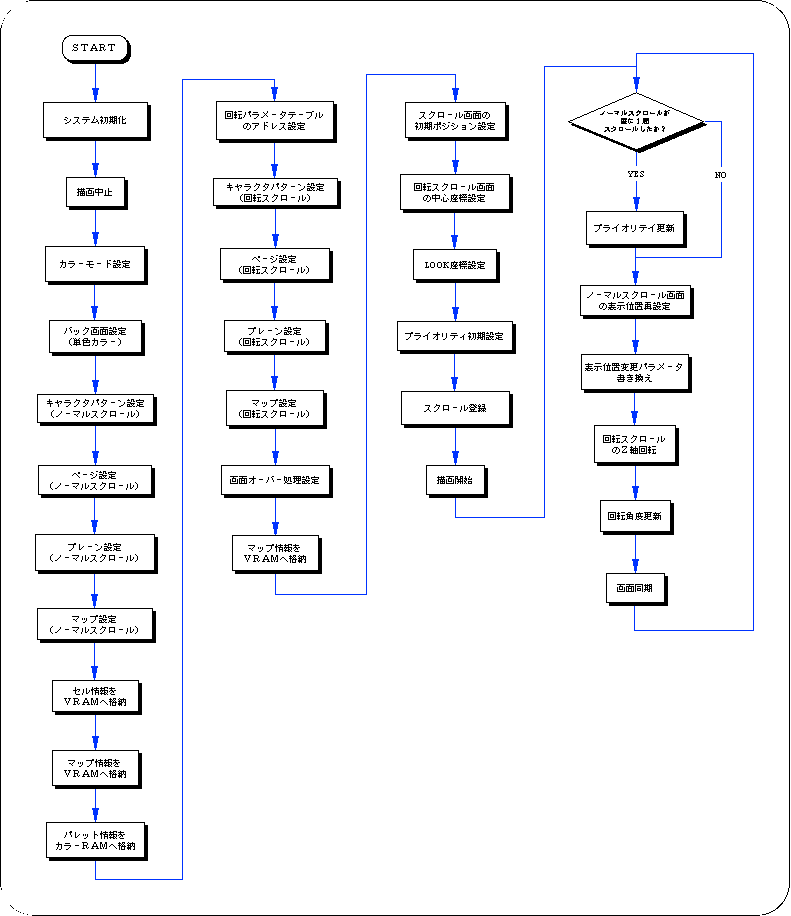

Return to previous page | Return to menu | Go to next page
In Sega Saturn, it is possible to set the drawing priority called priority for all the face types to be drawn. By using priority, for example, multiple scroll planes can be drawn separately for background and text display, and a 3D polygon plane can be sandwiched between them. However, the back screen is always drawn on the back.

Use the library functions “slPriorityNbg0 to 3” and “slPriorityRbg0” corresponding to the scroll plane type to set the priority for scrolling in SGL.

Note) POLYGON is included in the sprite.
In SGL, the priority is assigned to each drawing surface as follows.

Note) Polygon surface is included in the sprite.
The following sample program (Listing 8-9) implements scroll priority processing by actually using the SGL library function “slPriorityNbg0-3, Rbg0”.

